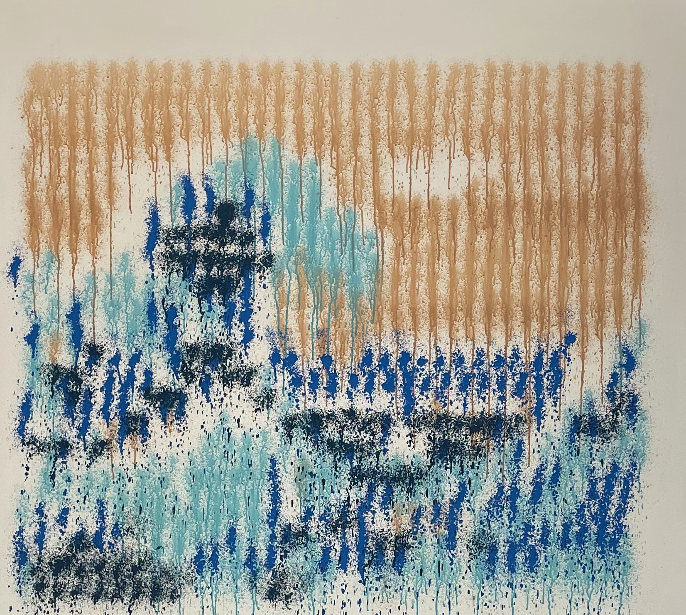

SPRING 2024
POINTILLIST QUAD

WORK TYPE
CONTEXTcsci1952z, brown
TIME4 months, ~8 hours/week
utilizing a quadcopter with a custom painting attachment to
recreate works of art on large canvases in the pointillism
style.
WORK TYPE
CONTEXTcsci1952z, brown
TIME4 months, ~8 hours/week
utilizing a quadcopter with a custom painting attachment to
recreate works of art on large canvases in the pointillism
style.
SOFTWARE
we used a dithering algorithm in a custom MATLAB app to create a
point-based version of any image, resulting in a table of points
and their RGB values. for initial testing, we used a small
quadcopter crazyflie and long exposure photography to test
"painting" parts of the image using an onboard LED.
DITHERING APP
LONG EXPOSURE TEST
HARDWARE
our drone consisted of a crazyflie board with a large quadcopter
frame. a bottle containing paint was mounted directly below the
center of gravity, with a front spray nozzle. the front spray
nozzle was actuated using a string and servo rig. we also
considered using a tether for paint and power, which did not pan
out.
V1 DRONE
SETUP & TROUBLESHOOTING
our painting rig used a canvas suspended from the ceiling
and supported on the ground. the drone was placed in a
takeoff box supported by prop guards.
TRACKING ERROR
during painting tests, we found that the cameras around the space would often lose track of the drone object for split-second intervals, causing the drone to receive erroneous flight instructions. this is partially because the large canvas prevented the subset of cameras behind it from tracking the drone.
after various tests with many changes in reflector positioning, we found that the drone actually flew most smoothly using a single raised reflector, as camera loss of all reflectors (in this case, one) meant that no instructions, correct or incorrect, would be sent.
during painting tests, we found that the cameras around the space would often lose track of the drone object for split-second intervals, causing the drone to receive erroneous flight instructions. this is partially because the large canvas prevented the subset of cameras behind it from tracking the drone.
after various tests with many changes in reflector positioning, we found that the drone actually flew most smoothly using a single raised reflector, as camera loss of all reflectors (in this case, one) meant that no instructions, correct or incorrect, would be sent.
PAINT CHOICE
we tested various types and viscosities of paint mixtures, including spray chalk, spray paint, and acrylic paint. ultimately, we used thinned acrylic paint, as the paint would need droplets when being sprayed; aerosolized particles would be affected by the drone's propellers and downwash.
we decided on a thinned mixture which would retain the proper color and opacity that would flow and avoid clogging the spray mechanism.
we tested various types and viscosities of paint mixtures, including spray chalk, spray paint, and acrylic paint. ultimately, we used thinned acrylic paint, as the paint would need droplets when being sprayed; aerosolized particles would be affected by the drone's propellers and downwash.
we decided on a thinned mixture which would retain the proper color and opacity that would flow and avoid clogging the spray mechanism.
SERVO POWER
initial tests found that, despite using thinned paint, the servo would not always receive enough power to fully actuate. we solved this by mounting a second, smaller battery to the frame solely for the servo.
initial tests found that, despite using thinned paint, the servo would not always receive enough power to fully actuate. we solved this by mounting a second, smaller battery to the frame solely for the servo.
FINAL WORKS

The Great Wave off Kanagawa,
...adapted by drone

The Starry Night,

...adapted by drone
Listen, Lee Krasner

...adapted by drone